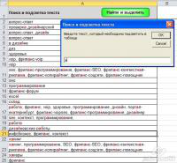

 Макрос запрашивает строку для поиска, после чего ищет введенный текст в первом столбце листа, и подсвечивает результаты поиска.
При запуске макроса появляется диалоговое окно (InputBox), позволяющее задать текст для поиска. Макрос подсвечивает красным цветом внутри ячейки текст, совпадающий с искомым Перед началом поиска, цвет всех ячеек первого столбца сбрасывается (на черный)
Option Compare Text
Sub Find_n_Highlight() On Error Resume Next: Err.Clear Dim ra As Range, cell As Range, res, txt$, v, pos& res = InputBox("Введите текст, который необходимо подсветить в таблице", "Поиск и подсветка текста", "диз") If VarType(res) = vbBoolean Then Exit Sub ' нажата кнопка ОТМЕНА txt$ = Trim(res): If Len(txt) = 0 Then Exit Sub ' текст не введен, или состоит из пробелов
Set ra = Range([A2], Range("A" & Rows.Count).End(xlUp)) ' диапазон для поиска Application.ScreenUpdating = False ra.Font.Color = 0: ra.Font.Bold = 0 ' сброс цветового выделения
For Each cell In ra.Cells ' перебираем все ячейки pos = 1 If cell.Text Like "*" & txt & "*" Then arr = Split(cell.Text, txt, , vbTextCompare) ' разбивает текст ячейки на части If UBound(arr) > 0 Then ' если подстрока найдена For Each v In arr ' перебираем все вхождения pos = pos + Len(v) ' начальная позиция With cell.Characters(pos, Len(txt)) .Font.ColorIndex = 3 ' выделяем цветом .Font.Bold = True ' и полужирным начертанием End With pos = pos + Len(txt) Next v End If End If Next cell End Sub
· 33417 просмотров |
|||||||||||||||
Комментарии
Начало формы
Настройки просмотра комментариев
Плоский список - свёрнутый Плоский список - развёрнутый Древовидный - свёрнутый Древовидный - развёрнутый
По дате - сначала новые По дате - сначала старые
10 комментариев на страницу 30 комментариев на страницу 50 комментариев на страницу 70 комментариев на страницу 90 комментариев на страницу 150 комментариев на страницу 200 комментариев на страницу 250 комментариев на страницу 300 комментариев на страницу
Выберите нужный метод показа комментариев и нажмите "Сохранить установки".
Конец формы
#1Ответ администратора сайта, 13 Окт 2014 - 20:26.
Валерий, конечно я принимаю заказы.
На сайте ведь есть кнопка «Оформить заказ»...
· ответить
#2Валерий, 13 Окт 2014 - 18:55.
Еще заказы принимаете?
· ответить
#3Ответ администратора сайта, 5 Сен 2014 - 16:06.
Здравствуйте
Это совсем другой макрос нужен
Можно сделать под заказ (мы берем заказы на сумму от 1000 рублей)
· ответить
#4Гость, 5 Сен 2014 - 14:54.
Спасибо!
А не могли бы помочь как на основе(а можно и не на основе) этого кода сделать макрос такой.
Искать значения(слово) из столбца F( в нем искомое слово, строк множество пока не станет пусто) в столбце A(возможно несколько повторений искомого текста) и если находит, то брать значение соответствующей ячейки этой строки в столбце G(строка та же что и искомое слово) и подставлять в соответствующую ячейку B(правее ячейки из A). И зациклить пока все слова из F не будут найдены в A и подставлены значения из G.
Небольшая благодарность не заставит себя ждать :)
· ответить
#5Администратор сайта, 4 Фев 2014 - 22:58.
Здравствуйте, Влад.
Сделать можно все что угодно, - но только под заказ.
Потому что идей у пользователей много, а у меня свободного времени - намного меньше)
· ответить
#6Влад, 4 Фев 2014 - 14:06.
Хорошая задумка, но ещё было бы гибче работа в таком формате.
1. Было бы альтернативное окно, в котором можно ввести список (допустим до 1000 значений, либо без ограничений) для массовой подсветки.
2. Предусмотреть поиск не по частичному совпадению, а полному. Например, в массиве указано отчество ВИКТОРОВИЧ, а ищем ВИКТОР. Следовательно, если ВИКТОР не найден, тогда отчество остается не подсвеченным.
Мысли вслух.
· ответить
#7Гость, 11 Янв 2014 - 14:52.
Хотел отблагодарить, но не вижу как. Дайте кошелек пожалуйста.
· ответить
#8Гость, 11 Янв 2014 - 14:39.
Вывел в виде кнопок на ленту: поиск по А - сброс, поиск по В - сброс.
Для работы с сем. ядром для сайта - самое то. Спасибо огромное!
· ответить
#9Ответ администратора сайта, 11 Янв 2014 - 14:36.
Можно и так сделать. Любой каприз за ваши деньги)
· ответить
#10Гость, 11 Янв 2014 - 14:20.
Вот было бы супер, если бы окошко не пряталось, и в нем была кнопка "сбросить подсветку"
· ответить
#11Ответ администратора сайта, 11 Янв 2014 - 14:17.
Сброс подсветки выполняется легко, - достаточно выделить первый столбец, поставить «цвет текста» = автоматически, и отжать кнопку «Ж»
В виде макроса (для первого столбца) это будет выглядеть так:
Sub СнятьПодсветку()
Range("a:a").Font.Bold = False
Range("a:a").Font.ColorIndex = xlColorIndexAutomatic
End Sub
· ответить
#12Гость, 11 Янв 2014 - 14:11.
Класс! Спасибо большое!
Хорошо бы еще макрос, который будет сбрасывать подсветку.
· ответить
#13Ответ администратора сайта, 1 Май 2013 - 12:57.
Макрос ищет и подсвечивает искомый текст только в первом столбце
(в диапазоне ячеек с A2 до последней заполненной ячейки в столбце A)
А у вас, возможно, данные в другом столбце расположены.
· ответить
#14Гость, 1 Май 2013 - 11:27.
Скопировал код, вставил, при запуске макроса вылезает окно поиска, но сам поиск не происходит и ничего не подсвечивается. Не пойму в чем проблема.
· ответить
#15ipumov1, 21 Янв 2013 - 18:48.
То что нужно. Спасибо большое!
PS только почему то мою тему на планете эксель удалили.
· ответить
Отправить комментарий